4 Raster Data
4.1 Rasters and raster analysis
In this section you learn what a raster is, and how to read, plot, and manipulate such data.
First install the required packages
library(rgdal)
library(raster)
library(tidyverse)
library(sf)
library(maps) # for making a scale bar
library(rgeos) # for labels on polygonsNow set the working directory to your own computer (or better yet be using an R project!).
4.2 Understanding what a raster is
What is a raster? Nothing more than a matrix! The command raster() turns any matrix into a raster-object that can be used for spatial analysis. You will now create your own raster:
Create an empty matrix with the required dimensions:
## [,1] [,2] [,3]
## [1,] 0 0 0
## [2,] 0 0 0
## [3,] 0 0 0Populate each row of the matrix with information (the values of the cells) and use the raster() command to turn it into a raster object, which you can plot.
## [,1] [,2] [,3]
## [1,] 1 5 8
## [2,] 2 6 9
## [3,] 3 7 10As you can see, every cell has a color according to its value. You will find out later how to select specific colors.
4.3 You can do any maths with a raster!

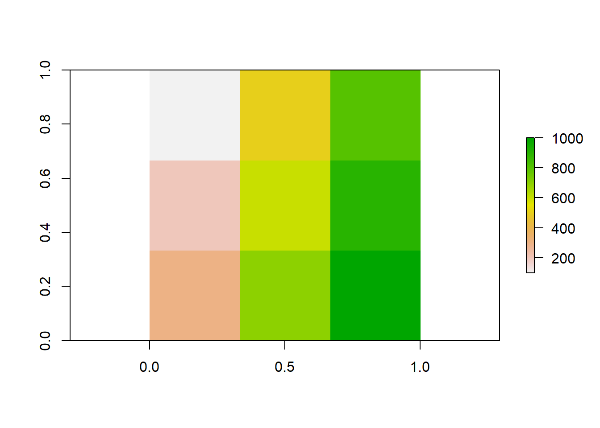
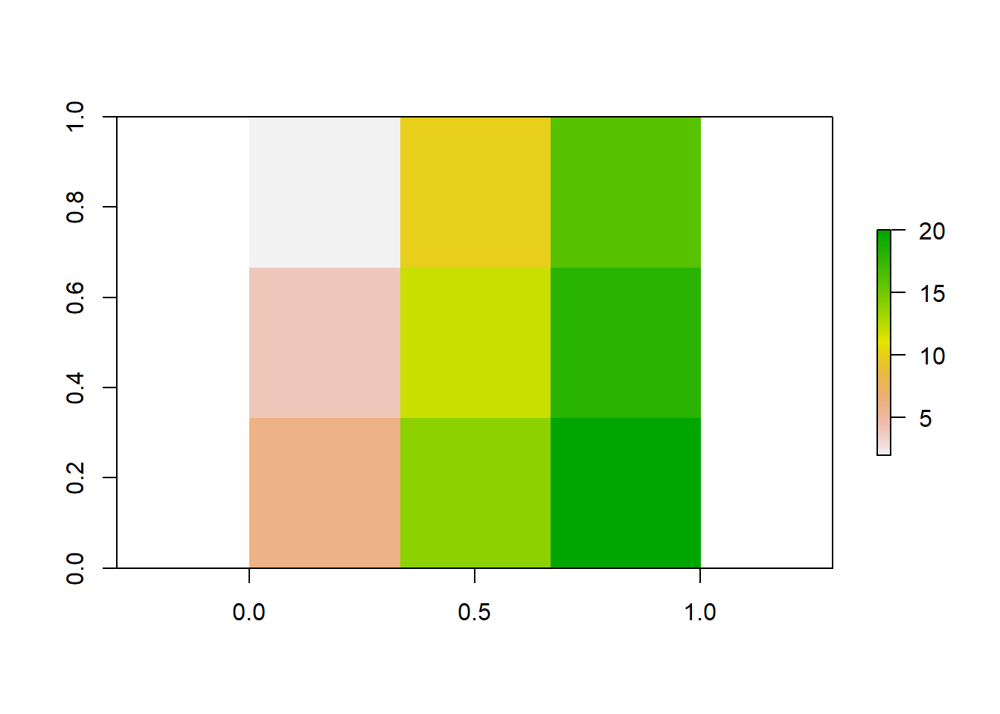
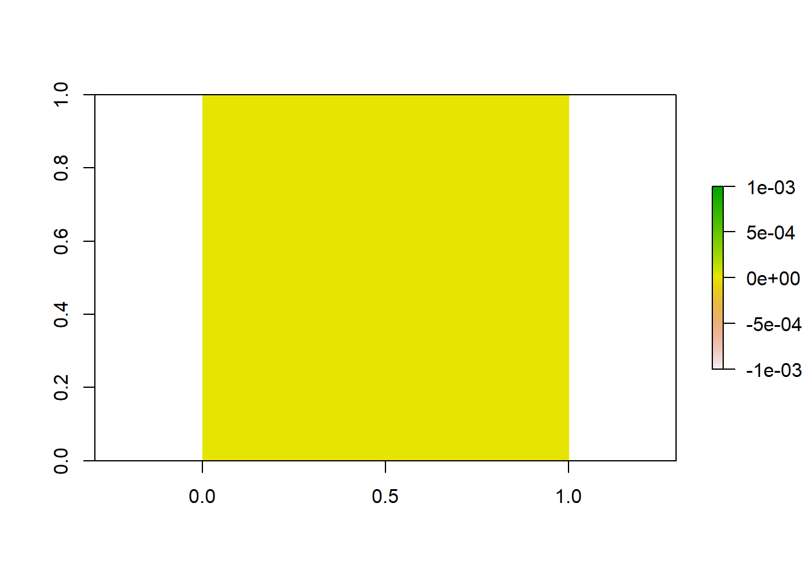
4.3.1 Optional task:
Create a second raster with different numbers, add both rasters up and plot the result. Did the colors change?
4.4 Investigate rasters
You can also use these commands to investigate different aspects of the data:
## [1] 0.3333333 0.3333333## [1] 3## [1] 3## [1] 9## [1] 3 3 1## CRS arguments: NA## [1] 0## [1] 0## [1] 1## [1] 1## [1] 1 10## [1] 5.666667## value count
## [1,] 1 1
## [2,] 2 1
## [3,] 3 1
## [4,] 5 1
## [5,] 6 1
## [6,] 7 1
## [7,] 8 1
## [8,] 9 1
## [9,] 10 14.5 Reading a raster into R
Now we use a raster version of the outline of Australia to extract data from the worldclim dataset, and create one layer for mean annual temperature, and mean annual rainfall.
The raster() command is used to read in single data objects:
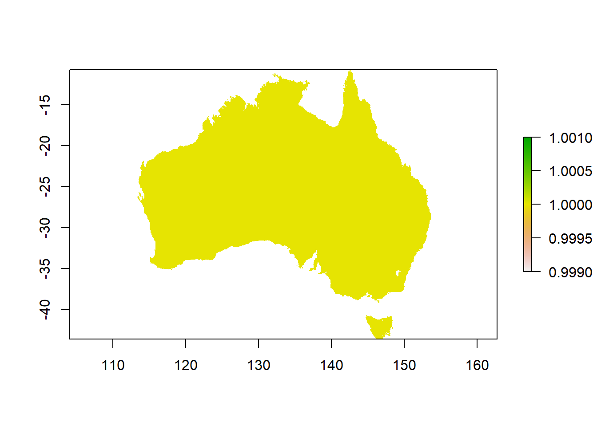
Investigate the raster: how many cells does it have? How many rows and columns? Can you calculate how large one cell is?
4.6 Reading a list of rasters into R
As useful as single data files are, often you have to read in a lot of files at the same time, for example when working with time series such as climate data that often come in files for single months, days or years and you need to combine or summarise them for your analysis. Instead of reading in every single file individually, you can create stacks.
This is particularly useful if you intend to combine them, for example by calculating the annual mean from 12 monthly means. To do so, you can create a list from all files in a directory to read in at once, and then create a stack of rasters, like a thick sandwich.
rasterlist_t <- list.files("data/wc_tavg",
pattern = ".tif$",
full.names = TRUE)
head(rasterlist_t) # just a list## [1] "data/wc_tavg/wc2.0_2.5m_tavg_01.tif"
## [2] "data/wc_tavg/wc2.0_2.5m_tavg_02.tif"
## [3] "data/wc_tavg/wc2.0_2.5m_tavg_03.tif"
## [4] "data/wc_tavg/wc2.0_2.5m_tavg_04.tif"
## [5] "data/wc_tavg/wc2.0_2.5m_tavg_05.tif"
## [6] "data/wc_tavg/wc2.0_2.5m_tavg_06.tif"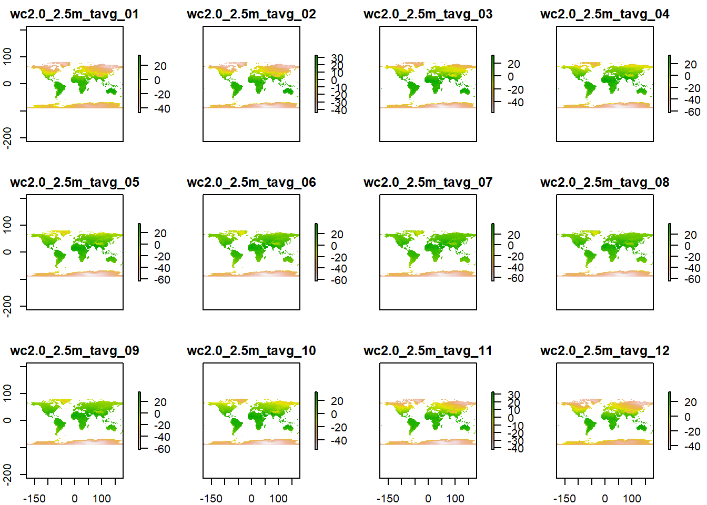
Now do the same for the rainfall data!
4.7 Challenge One: Operations on raster stacks
Now you can use any command you want ONCE on this big sandwich of rasters instead of having to use it 12 times on the single files. You can also line up several commands the you want to execute one after the other, which saves you from generating a lot of intermediary files. The %>% (pipe command) works like that: after the first command is executed, the output gets used for the second command without assigning it to variable and storing it in memory.
For example, clipping a raster is a two step process. First, the raster gets cropped to the rectangular extent of the data file used for the clipping (crop function), and then all the cells that have no values in the data file WITHIN the square extent that is used for the clipping are set to NoData (mask function). You can check out if you can see the difference in the output if you don’t use the mask command, there are some parts around the coastline of Australia that will have data without the mask. Can you find them?
A single step operation would be like this:
t_stack_crop <- crop(t_stack,
au)
t_stack_crop_mask <- mask(t_stack_crop,
au)
plot(t_stack_crop_mask)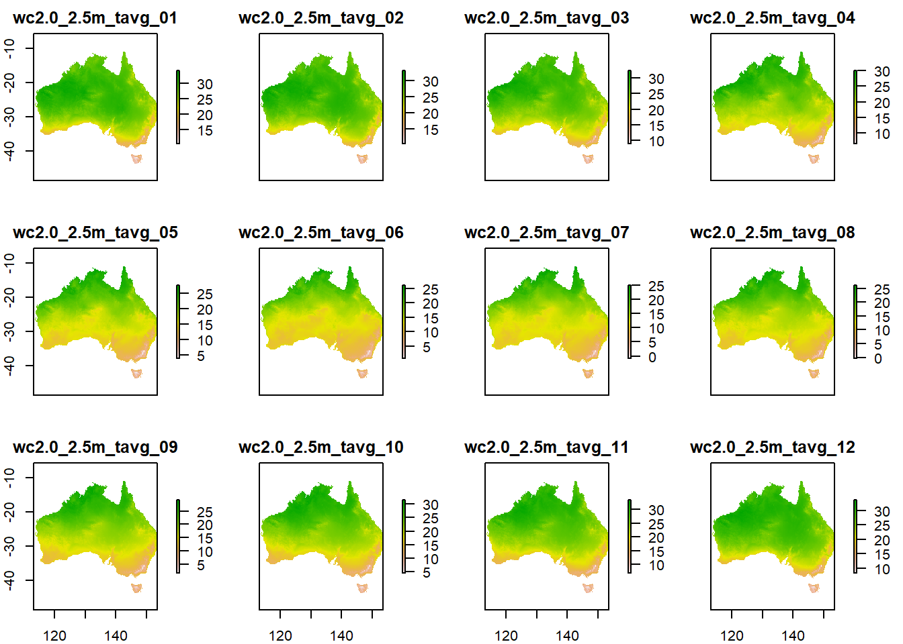
You can speed things up with a pipe:
t_stack_au <- crop(t_stack, au) %>%
mask(au)
p_stack_au <- crop(p_stack, au) %>%
mask(au)
plot(p_stack_au)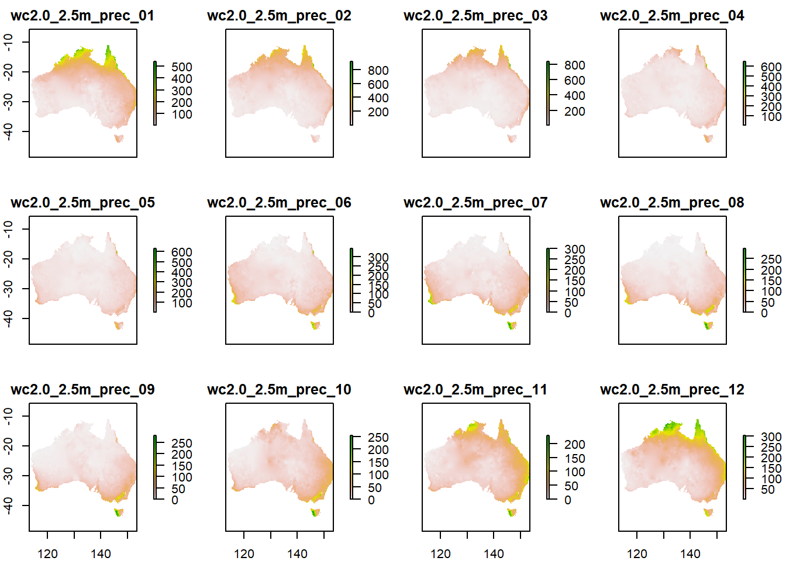
Now you can calculate the mean from your cropped and masked stack:
You can use the plot() command to check how your output looks or get a summary by executing the name of your new raster.
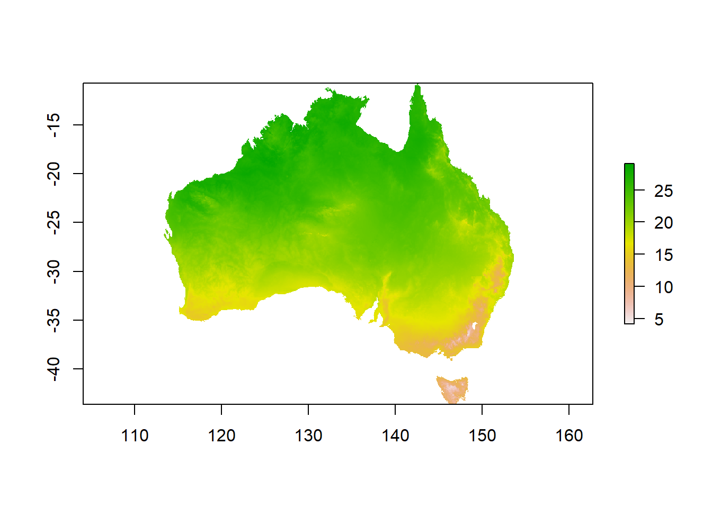
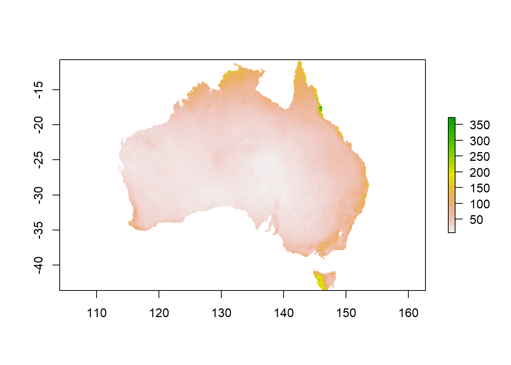
Well done, you have mastered single rasters, raster stacks and creating new information from your data!
Keep in mind: the data from worldclim is of high quality, and all rasters are already in the same projection and resolution, so you can skip any exploration and preparation of the data. If your data comes from different sources, or you are not sure about the quality, always spend some time with exploration, cleaning and preparing, like omitting obvious wrong points like koalas that are not on land, or investigating NA values (what value is used for NAs (some raster data uses for example -999 or very small values), where are these NAs located, and how might this impact your analysis).
4.8 Writing new rasters to file
You can write your new data to file if you want.
4.9 Challenge 2: Creating categories from summarizing and combining data
In many cases, continuous data is what you want, but sometimes categories are more useful to get a broader overview, or with known thresholds or ranges. Some species for example only occur above a certain temperature, or in a particular elevation. Here you learn how to make categories from combining multiple continuous datasets:
You want to make categories for the temperature and the rainfall to get a better overview of distinct combinations. For this exercise, create four categories for temperature (cold, cool,warm, hot) and two for rainfall (dry and wet).
Tip: use the cellStats(x, stats) command to find out the quantiles as boundaries for temperature and min, mean, max as boundaries for the rainfall. Of course, the breakpoints that you choose will drive the quality of your results, and to derive at the values at which you want to distinguish categories might need a lot of research or knowledge. You could probably question if the words cold, cool, warm and hot fit to the quantiles. Feel free to try other breakpoints that you find more appropriate.
4.10 Preparation for the reclassification into categories:
Maybe you can remember how we created our first raster in the beginning - you will now create such a raster to use for reclassification. It has to show the start and endpoints for your categories (that you found out with cellStats() or based on more meaningful ecological knowledge), as well as the numbers you want to use as category-names:
tcat <- matrix(0,
nrow = 4,
ncol = 3)
# populate each row of the matrix with reclassification information for temperature
tcat[ , 1] <- c(4, 19, 22, 25) # fill in here the start of the categories
tcat[ , 2] <- c(19, 22, 25, 30) # fill in here the endpoint of the categories
tcat[ , 3] <- c(1:4) # fill in here the number for the categories (1-4)
pcat <- matrix(0,
nrow = 2,
ncol = 3)
# populate each row of the matrix with reclassification information for precipitation
pcat[ , 1] <- c(6, 40)
pcat[ , 2] <- c(40, 380)
pcat[ , 3] <- c(1:2)4.11 Reclassification
Now you can use the matrix for reclassification. Reclassification means that a raster will get overwritten with new values in all cells, based on bins of values. You just created these bins with your matrix. For example, all cells between 4 and 19 degrees will get assigned to category 1 in the new raster.
tcat_au <- reclassify(tmean,
rcl = tcat,
right = FALSE,
overwrite = TRUE)
pcat_au <- reclassify(pmean,
rcl = pcat,
right = FALSE,
overwrite = TRUE)
# check out what you created
plot(tcat_au)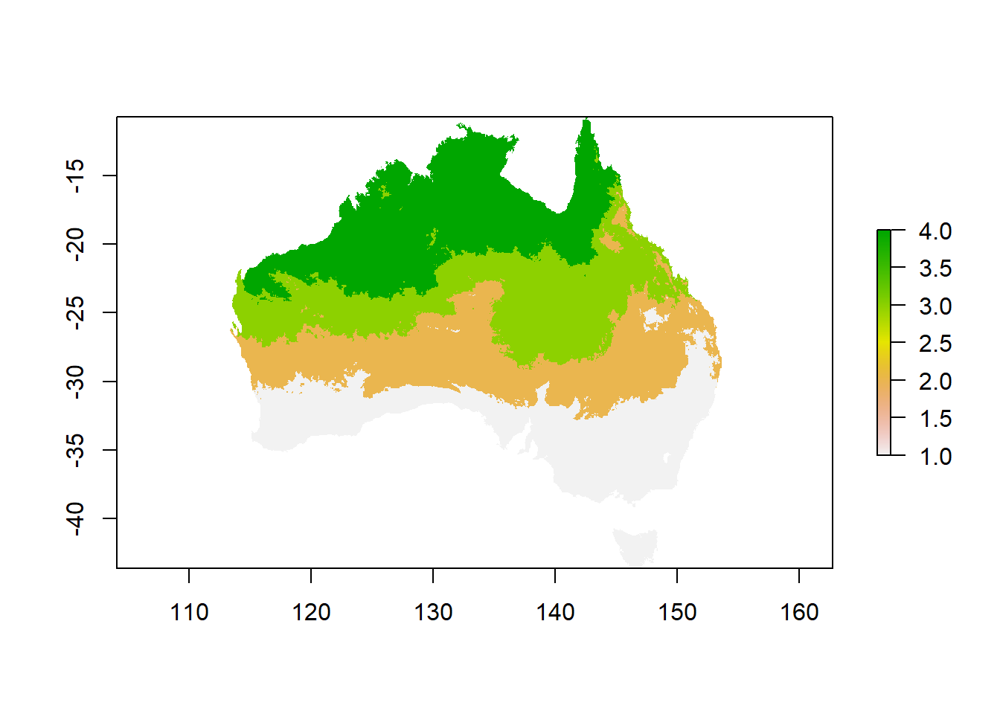
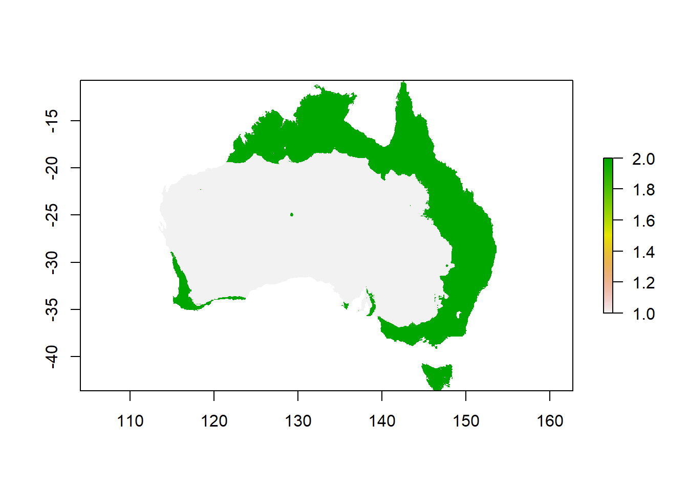
Now you can combine the 2 rasters to get 8 categories for combinations of temperature and rainfall…
Think about it: you want to make sure that you can still see both, the values that describe the rainfall (1 & 2), and the values that describe temperature (1-4). In order to be able to tell them apart, you can multiply one raster by 10 before combining them - that way you will get a combinatory value with 2 digits: one slot has a 1 or 2, and one slot a 1, 2, 3 or 4. What would happen if you just add both rasters up?
You can also define the colors you want for your categories. There are many websites that show colors and their names for R.
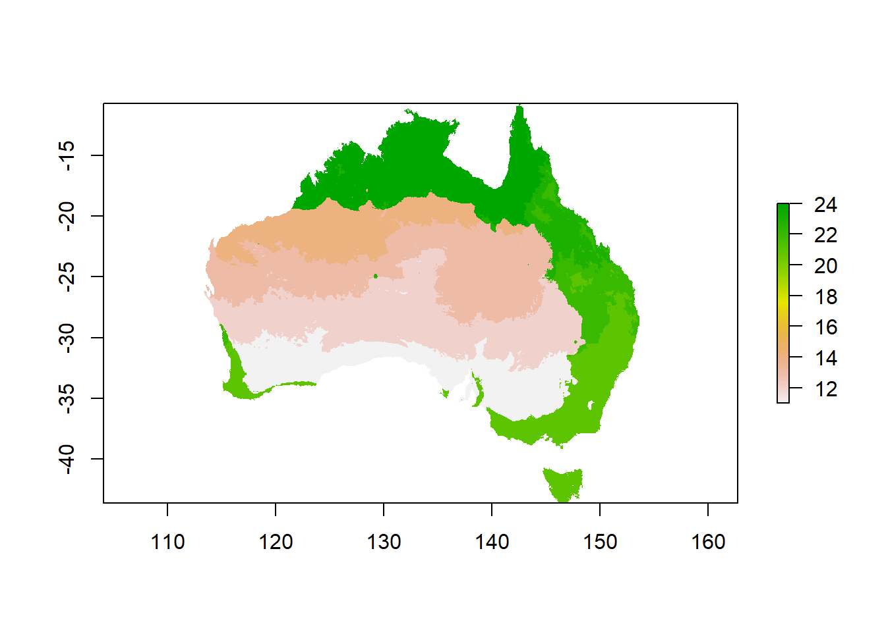
# you can select colors for your gradients
# define the list of colour names (see Appendix for colour names)
colors <- c("white",
"yellow",
"lightgreen",
"darkgreen",
"lightblue",
"blue",
"purple",
"red")
breaks <- c(10, 11, 12, 13, 14, 21, 22, 23, 24)
# plot the raster
plot(climate_au,
breaks = breaks,
col = colors)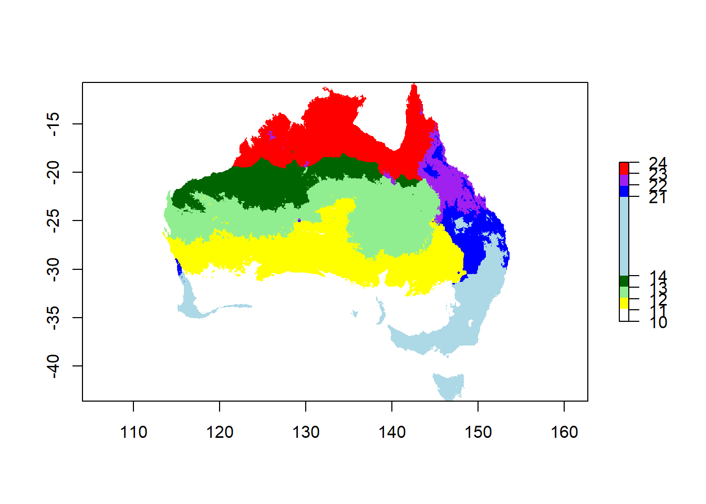